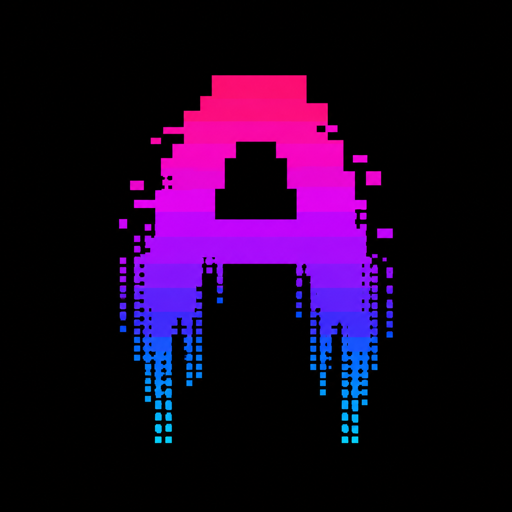

Simple
Direct launcher flow with clear terminal navigation.

AXION View on GitHub[ScripthubDev]
What is Axion?
Axion is a lightweight open-source multitool designed to provide quick access to useful tools, applications, network utilities and system information from a clean terminal interface.
Direct launcher flow with clear terminal navigation.
Quick access to tools, folders, apps and network checks.
Batch and shell scripts make it easy to modify.
Inspect it, fork it and build your own version.
Current versions
The original and currently most complete Axion edition.
Windows 10 / Windows 11Linux-compatible edition using Bash. Tested on Omarchy and expected to work on most desktop Linux distributions.
The first macOS edition. Compatibility and stability testing are still in progress.
A native Windows executable version is planned for the future.
Windows interface
Features
Custom AXION ASCII animation with wave movement and animated pink, purple and blue colors.
Run a connection test directly from Axion.
Check whether a website is reachable and view response information.
Retrieve public information about domains using Whois / RDAP.
Quickly display useful Windows hardware and system information.
DNS, IP information, ping and network adapter utilities.
Open Downloads, Documents, Desktop and AppData directly.
Quickly launch apps and services such as Roblox, Steam and Spotify.
The entire project can be inspected and customized.
Version history
v1.0.0 First Windows version
v1.5.0 Interface and tool improvements
v2.0.0 Major interface redesign
v2.1.0 Additional interface and compatibility improvements
v2.2.0 New Internet and Social Network options
v2.5.0 Major startup and interface update
v3.0.0 Major Multi-Page & Utility Update
v3.0.1 Animation, interface polish and stability update
lnx-v1.0.0 First official Linux edition
lnx-v1.0.1 Linux launch and installation improvements
mac-v1.0.0 First macOS testing edition
Open source
Axion is completely open-source. Explore the source code, customize the interface, add your own tools and create your own version.
Explore Source CodeAxion/
|-- Axion.bat
`-- fils/
|-- SpeedTest.bat
|-- WebsiteStatus.bat
|-- WhoisLookup.bat
`-- ...Download / GitHub
Download the latest release or explore the project on GitHub.